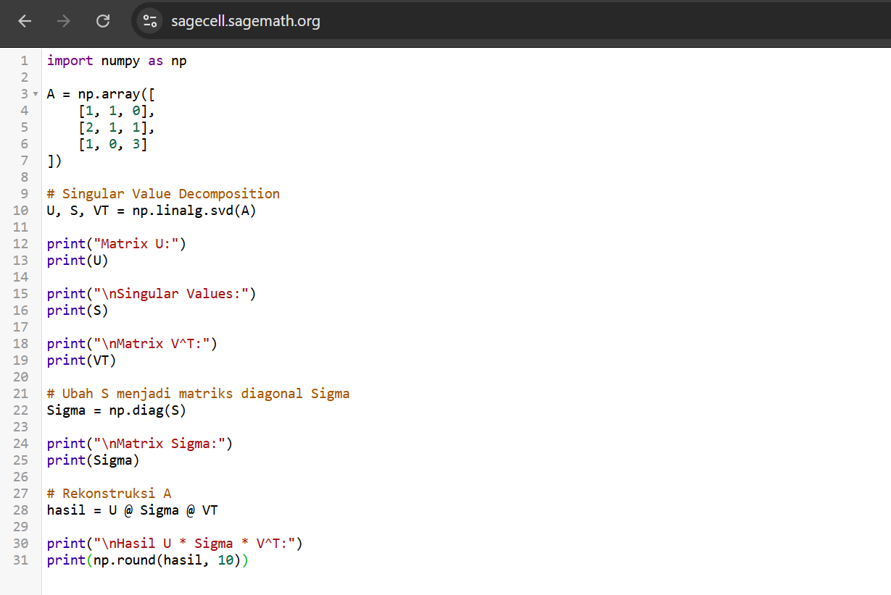
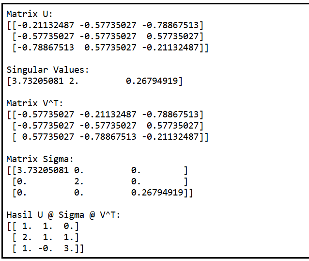

Alif Indra Aufakhi Akrom250411100179Teknik Informatikamateri |
Singular Value Decomposition (SVD)PendahuluanSingular Value Decomposition (SVD) merupakan salah satu teknik faktorisasi matriks yang sangat penting dalam aljabar linear. Metode ini menguraikan sebuah matriks menjadi beberapa komponen yang lebih sederhana sehingga karakteristik utama matriks dapat dipahami dengan lebih mudah. SVD banyak dimanfaatkan dalam berbagai bidang, antara lain:
Untuk memahami SVD, diperlukan pengetahuan dasar mengenai:
Definisi MatematisUntuk suatu matriks riil \(A\) berukuran \(m \times n\), dekomposisi SVD dinyatakan sebagai: $$ A = U\Sigma V^T $$dengan: 1. Matriks \(U\)Matriks \(U\) merupakan matriks ortogonal berukuran \(m \times m\). Sifat pentingnya adalah: $$ U^TU = UU^T = I $$Kolom-kolom pada matriks \(U\) disebut vektor singular kiri (left singular vectors) dari matriks \(A\). 2. Matriks \(\Sigma\)Matriks \(\Sigma\) merupakan matriks diagonal berukuran \(m \times n\) yang memuat nilai-nilai singular (singular values) pada diagonal utamanya. Bentuk umumnya adalah: $$ \Sigma = \begin{bmatrix} \sigma_1 & 0 & \cdots & 0 \\ 0 & \sigma_2 & \cdots & 0 \\ \vdots & \vdots & \ddots & \vdots \\ 0 & 0 & \cdots & \sigma_r \end{bmatrix} $$dengan: $$ \sigma_1 \ge \sigma_2 \ge \cdots \ge \sigma_r \ge 0 $$di mana:
Nilai singular menunjukkan besarnya kontribusi setiap arah utama dalam merepresentasikan data. 3. Matriks \(V^T\)Matriks \(V^T\) merupakan transpose dari matriks ortogonal \(V\) yang berukuran \(n \times n\). Sifat ortogonalnya diberikan oleh: $$ V^TV = VV^T = I $$Kolom-kolom matriks \(V\) disebut vektor singular kanan (right singular vectors) dari matriks \(A\). Interpretasi Geometris SVDSecara geometris, SVD dapat dipandang sebagai rangkaian tiga transformasi linear:
Dengan demikian, transformasi yang dilakukan oleh matriks \(A\) dapat dipahami sebagai kombinasi dari rotasi, penskalaan, dan rotasi kembali. KesimpulanSingular Value Decomposition (SVD) merupakan metode faktorisasi matriks yang menguraikan suatu matriks menjadi: $$ A = U\Sigma V^T $$
Melalui dekomposisi ini, struktur suatu matriks dapat dianalisis dengan lebih mudah. Oleh karena itu, SVD menjadi salah satu teknik fundamental dalam aljabar linear modern, analisis data, kompresi citra, serta berbagai aplikasi machine learning. Hasil Visualisasi versi sagemath cellDi bawah ini adalah SVD dari matriks 3x3.   |